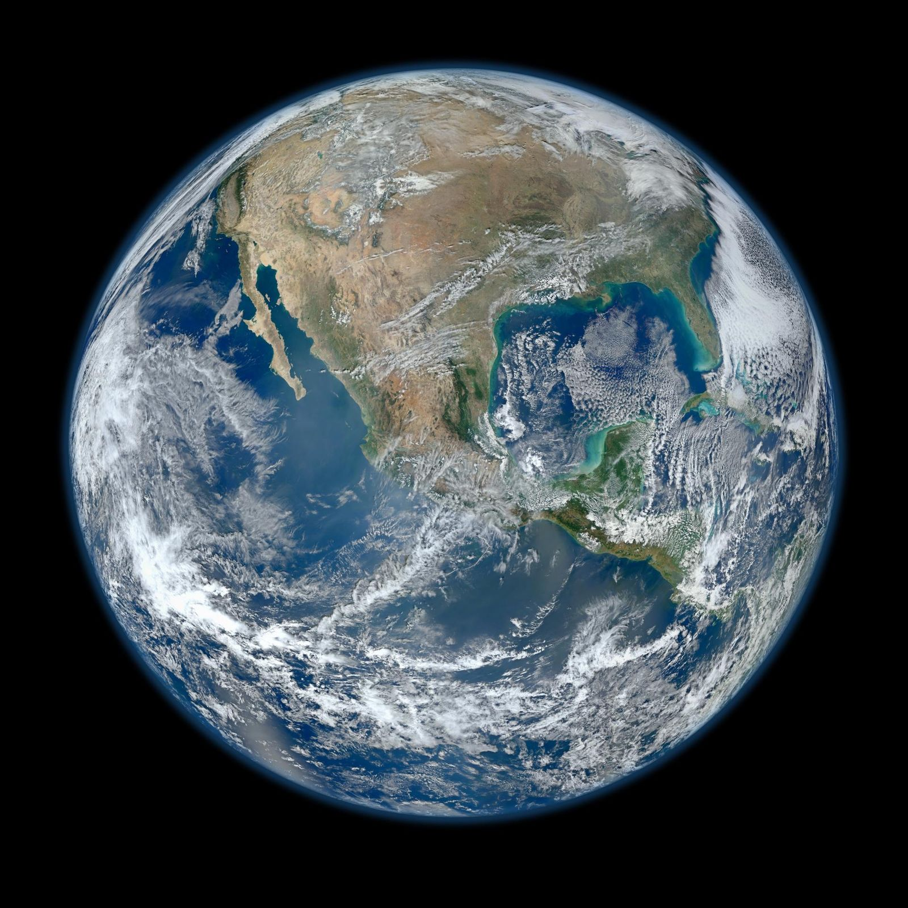

Part 1: Planet Earth · Chapter 3 of 15
Inside the Earth
Nobody has been there, but earthquake waves have mapped it.

The Earth is about 12,700 km across. The deepest hole ever drilled, the Kola Superdeep Borehole in Russia, reached just over 12 km, roughly one-thousandth of the way to the centre. Everything we know about the deep interior comes from indirect evidence, above all from earthquake waves.
When a large earthquake happens, its shock waves travel through the whole planet and are recorded by seismometers around the world. Waves speed up, slow down, bend and reflect when they meet material of a different kind. One type of wave cannot pass through liquid at all. By comparing records from thousands of earthquakes, seismologists have built up a picture of the Earth's layers.
The layers
Crust. The outermost skin, from about 5 to 10 km thick under the oceans to 30 to 70 km under the continents. It is the only layer we can sample directly.
Mantle. Hot rock about 2,900 km thick, making up most of the Earth's volume. It is solid, but over geological time it flows extremely slowly, carrying heat up from below.
Outer core. A layer of liquid iron and nickel about 2,200 km thick. Its swirling motion generates the Earth's magnetic field, which shields the surface from much of the Sun's harmful radiation.
Inner core. A solid ball of iron and nickel about 1,220 km in radius. It is hotter than the outer core, roughly 5,000 to 6,000 °C, but the pressure is so great that the metal stays solid.
Key terms
- crust
- The very thin top layer of the earth’s shell. It is cooler than the rock below.
- shell
- The earth’s rigid outer layer: the crust together with the solid top of the mantle.
- mantle
- The thick layer of white-hot rock, about 2,900 km deep, between the crust and the core. It is solid but churns very slowly.
- outer core
- The liquid layer around the earth’s centre, made largely of iron.
- inner core
- The solid ball of rock and metal at the very centre of the earth.
- shock wave
- A wave of energy that travels through rock. Shock waves from earthquakes show scientists what the inside of the earth is like.
- diameter
- A straight line across a circle or ball, passing through its centre. The earth’s diameter is over 12,700 km.
Check your understanding
Think of your answer, then open each question to compare.
How do scientists know what the inside of the Earth is like?
Mainly from the way earthquake waves travel through it, speeding up, slowing down, bending and reflecting at the boundaries between layers.
Which layer is liquid?
The outer core. The inner core is solid because of the enormous pressure.
What generates the Earth's magnetic field?
The movement of liquid iron in the outer core.